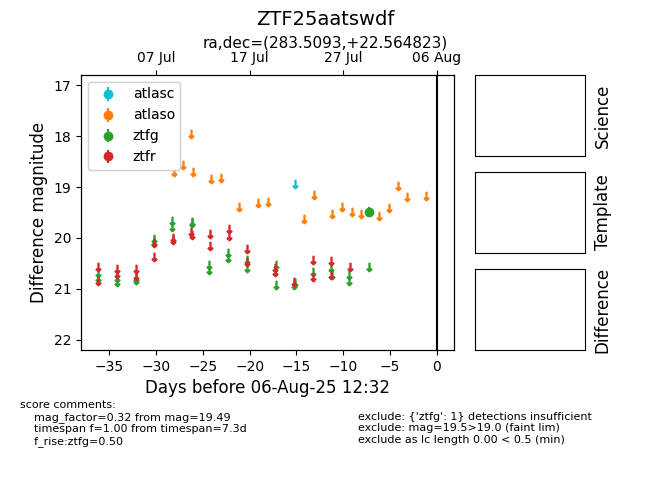

Target ZTF25aatswdf at 2025-08-06 17:07, see:
FINK: fink-portal.org/ZTF25aatswdf
Lasair: lasair-ztf.lsst.ac.uk/objects/ZTF25aatswdf
ALeRCE: alerce.online/object/ZTF25aatswdf
alt names
ZTF25aatswdf (ztf,fink)
coordinates:
equatorial (ra, dec) = (283.5093,+22.56482)
galactic (l, b) = (53.4890,+9.53518)
photometry
last ztfg=19.49
1 ztfg detections
